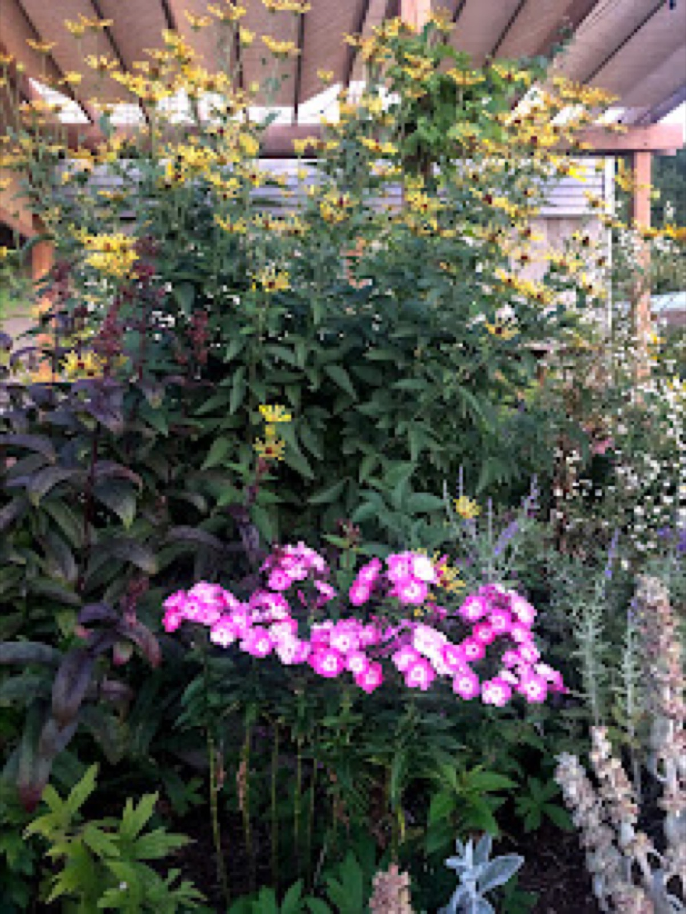

February 2021
Plants for 2021
My planning for 2021 has been largely focused on pollinators, with the added bonus of planting a forest.
I’ve been gardening with a focus on pollinators for several years now, really taking the deep dive into perennial plants (mostly herbaceous) that host and help sustain bees, butterflies, and moths. Little did I know how important a selection of trees plays in supporting butterflies throughout their lifecycle.

Now that I’ve successfully planted six large perennial garden beds, my focus has shifted to expanding the beds with plants that have flourished in heavy clay soil and some that I haven’t added to the collection just yet. Knowing how important it is to provide native food sources early and late in the season, I’ve really attempted to add those to the list of offerings.
The addition of trees that support pollinators is a bit tricky. Trees are expensive (for the most part) and take a long time to grow. That being said, I noticed immediate benefits to pollinators after planting Quercus Macrocarpa (Burr Oak) and Quercus Alba (White Oak.) We noticed leaves had been eaten throughout the season and they both seem to thrive despite the heat, drought, and sometimes soaking rains. The oaks are one part of our new forest, as these trees have been placed closer to our home. My attempts are to hide our home from an increasingly busy dirt road and evergreens are a necessity. Fortunately, Vermont has quite a few great evergreens to help with screening. Last year I planted a number of arborvitea, Red Cedar, and White Pine that do well in zone 5. Turns out that these plants also benefit pollinators and birds. For my 2021 planting list, I’ve ordered a number of willows to help with screening and to support pollinators. According to Doug Tallamy, Oaks support over 500 species of Lepidoptera, Salix (Willows) aren’t far behind. Professor Tallamy, has a pretty extensive list of plants that host essential pollinators and it seems that there is something for everyone’s yard. I highly recommend reading “Bringing Nature Home” for an early Spring read. I hope this book inspires others the way it inspired me to expand my pollinator gardening efforts.
Below is my list of additions of plants for 2021 for our 2 acre yard. I estimate that I’ll plant around 120 plants this spring, including trees. Annuals are just a bonus so I don’t include those. I’m sure this list will get bigger, however I’m excited to see the many selections from last year bloom and how these new plantings will enhance the space that was formally grass.
Native Perennials:
Alchemilla Mollis, Lady’s Mantle
Arnica Chamissonis
Asclepias tuberosa, Butterfly Weed (Butterfly’s delight!)
Althea Officinalis, Marshmallow
Echinacea Paradoxa, Yellow Coneflower
Eupatorium maculatum, Joe Pye Weed
Helenium Autumnal, Red and Gold Sneezeweed
Lobelia Siphilitica, Great Blue Lobelia
Senna Hebcarpa, Wild Senna
Valerian Officinalis, Valerian
Veronicastrum Virginicum, Culver’s Root
Non-Native Perennials:
Digitalis Purpurea, Foxglove
Nepata, Catmint
Perovskia Stripliciolia, Russian Sage
Shrubs:
Chokeberry
Bayberry
Trees:
American Chestnut
Swamp Oak
Tamarack
Red Oak
Red Cedar
Filed in the garden journal · February 2021